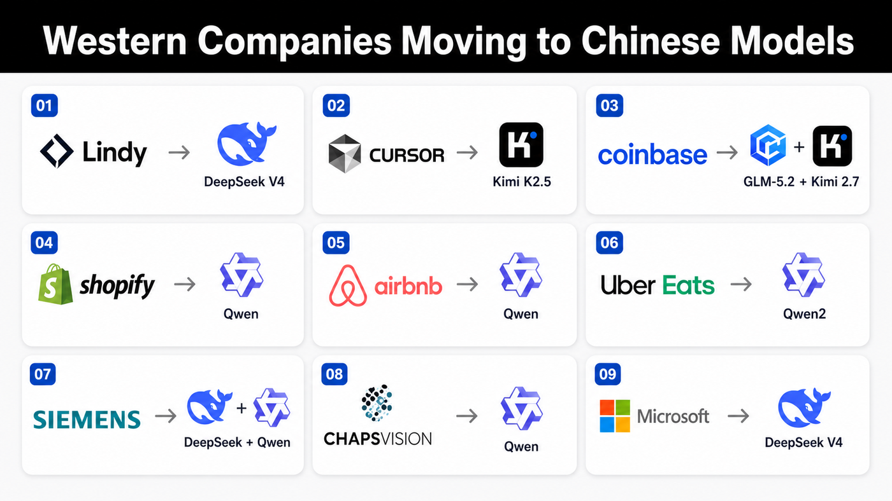

Торгова війна · AI · Волл-стріт
Китай починає демпінгувати не сталь, не сонячні панелі й не дешеві електрокари. Він демпінгує інтелект. І це б'є не по заводах — а по логіці оцінки всього AI-трейду: від моделей до пам'яті, сховища й дата-центрів.

Якби я був Сі Цзіньпіном, мені не треба було б вторгатися на Тайвань, щоб вдарити по американському ринку. Я зробив би дещо дешевше й елегантніше: залив би економіку США дешевим AI.
Хвиля китайських open-weight моделей — DeepSeek, Qwen, Kimi, GLM — заходить на глобальний ринок за цінами, від яких американська бізнес-модель AI виглядає крихкою. Це вже не низькоякісні копії з відставанням на п'ять років. Вони достатньо добрі для реального бізнесу: код, автоматизація, підтримка, внутрішні інструменти, агентні воркфлоу.
Нехай кожен фіндиректор поставить очевидне питання: «Навіщо платити преміум, якщо дешева модель — достатньо добра?»
Увесь американський AI-трейд побудований на одному припущенні: AI буде дорогим, дефіцитним і монетизованим. А що, як він стане дешевим, безмежним і сировинним?
S&P 500 сьогодні небезпечно сконцентрований навколо AI-наративу. Nvidia, Microsoft, Meta, Alphabet, Amazon, Broadcom, Oracle, дата-центри, енергетика, мережі, охолодження, обладнання для чипів — величезна частина індексу оцінена так, ніби попит на AI зростатиме вічно й хтось на цьому заробить величезну маржу.
І це вже не просто технологічна тема, а частина макрокартини. St. Louis Fed оцінив, що AI-інвестиції дали 0.97 п.п. реального росту ВВП США за 9 місяців 2025 року — це ~39% усього приросту, більше за внесок IT під час доткомівського буму. (Хоча є й дискусія: Goldman Sachs каже, що прямий внесок AI був «практично нульовим». Навіть макродані — предмет суперечки.)
Американський AI-бум тримається на ланцюгу: мільярди на чипи → гігантські дата-центри → преміум-ціни лабораторій → дорогі контракти → інвестори виправдовують оцінки, бо вірять, що все це стане високомаржинальним доходом.
Дешеві open-weight моделі розривають цей ланцюг. Якщо компанія покриває більшість AI-задач через Qwen, DeepSeek, Kimi чи GLM, дорога американська модель стає інструментом лише для найскладнішого. OpenAI й Anthropic не зникають — але їхня цінова влада ставиться під сумнів. А щойно під сумнів цінова влада, під сумнів і оцінка.
CEO Coinbase Браян Армстронг переключив інженерів за замовчуванням на GLM 5.2 (Zhipu) і Kimi 2.7 (Moonshot) через внутрішній LLM-шлюз — і урізав AI-витрати майже вдвічі, попри рекордне споживання токенів. GLM 5.2 ≈ $1.40 за млн вхідних токенів проти ~$5 у Anthropic Opus 4.8.
Ось чому теза «китайський AI-демпінг» така небезпечна: китайським моделям не треба бути кращими. Достатньо бути достатньо добрими — і значно дешевшими. Дешевому продукту не треба бути ідеальним — йому треба лише вдарити по пулу прибутку. Щойно є дешева альтернатива, кожен преміум-провайдер мусить пояснювати, чому його ціна досі виправдана.
Частково — так. Держпристрої, федеральні агенції, оборонні підрядники, критична інфраструктура, регульовані галузі. Дехто вже рухається в цей бік.
Але повна заборона в приватній економіці — набагато складніша. Open-weight моделі — це не TikTok. Щойно ваги опубліковані, їх можна завантажити, дзеркалити, дотренувати, хостити локально й маршрутизувати через треті платформи. Можна заборонити офіційний китайський API й тиснути на хмари — але не можна легко зупинити кожен стартап чи середній бізнес від дешевшого інтелекту, коли він доступний глобально.
Заборона захищає оцінки американського AI — але може вбити його впровадження
Це і є пастка. Заборона не вирішує економічну проблему — вона змушує компанії США платити за AI більше, ніж їхні іноземні конкуренти. Вибір потворний з обох боків: впустити дешевий китайський AI й ризикнути стисненням маржі лідерів — або обмежити його й зробити американські компанії менш конкурентними. У будь-якому разі фантазія про безмежний AI-прибуток пошкоджена.
Небезпека не в тому, що кожна AI-акція піде в нуль — це маячня. AI реальний. Але ринок уже оцінив багато імен так, ніби переможці очевидні, а пули прибутку захищені. Це не так. Якщо інтелект стає сировиною, головними бенефіціарами можуть виявитися не власники моделей, а компанії, які використовують AI. Тепер є щонайменше три відра:
Nvidia, чипи, дата-центри, енергетика, охолодження, мережі. Виграють від AI-capex — але вразливі, якщо очікування щодо capex надто агресивні.
Екосистеми OpenAI й Anthropic, хмари, enterprise-софт. Найвразливіші до стиснення цін, щойно дешеві моделі стануть достатньо добрими.
Компанії, що не продають AI, а застосовують його для зниження витрат. Можуть тихо стати кращими довгостроковими переможцями.
Роздрібна пастка — купувати найочевидніші AI-імена вже після того, як ринок заклав у ціну досконалість. І ця загроза не абстрактна. Нижче — конкретні акції в епіцентрі та канал, яким дешевий китайський AI може їх ударити.
Частина 2 · Ланцюг напівпровідників
Від Nvidia до Micron, SanDisk, Seagate й трейду дата-центрів — усі ці імена пов'язані однією вірою: попит на AI вибухатиме, а capex зростатиме. Дешевий китайський AI створює дві протилежні сили:
Сила 1 — бичача: дешевший інтелект може збільшити використання. Більше компуту, пам'яті, сховища. Сила 2 — ведмежа: дешевший інтелект руйнує ціновий парасоль — якщо «достатньо добре» дешевше, зникає потреба в найагресивнішому capex і найдорожчих frontier-моделях. Ринок оцінює не «AI існуватиме», а «AI вимагатиме нескінченних преміум-витрат на інфраструктуру». Це не одне й те саме.
Кожен AI-прискорювач потребує HBM. Пам'ять зі «сплячого» товару стала найгарячішим кутком ринку.
Пам'ять досі циклічна. Щойно ринок повірить, що AI-capex на піку — переоцінка буде брутальною.
Більше інференсу, агентів, датасетів і логів → більше NAND. Дефіцит структурний.
Уже став символом AI-трейду — торгується на продовженні наративу, не лише на фундаменталі. Після +800% простору для розчарувань обмаль.
AI-дата-центрам потрібне масове холодне сховище. Nearline-потужність розпродана.
Оцінено так, ніби дефіцит вічний. Уповільнення capex швидко перетворює «продано на роки» на «пік циклу».
Дешевший AI = більше інференсу = потенційно більше GPU. Король лишається незамінним.
Оцінка тримається на припущенні, що всі купують найдорожчий frontier і будують максимально агресивно. Комодитизація моделей ставить це під сумнів.
Кастомні ASIC-и стають привабливішими, коли компанії ріжуть вартість компуту. Оборонніший за чистий GPU.
Усе ще ланка capex-ланцюга. Якщо гіперскейлери гальмують чи переносять розгортання — Broadcom не імунний.
Якщо GPU не вистачає — неохмари цінні: дають орендовану потужність швидко.
Борг, циркулярне фінансування, ставки оренди впали. Meta заходить у ринок оренди — конкуренти нещодавно різко «просіли».
Виграє, коли ринок вірить, що попит на компут переповнить доступні потужності.
Вкрай наративо-чутлива: фінансування, ціни на енергію, виконання, концентрація клієнтів. Це не «безпечна AI-акція» — це важільна ставка на наратив.
Не кожен інференс потребує топового GPU — частина йде на CPU / edge / дешеві прискорювачі. Це підтримує релевантність Intel.
Власні проблеми з виконанням, foundry й конкуренцією. Радше реструктуризаційно-геополітичний трейд, ніж чистий AI-capex.
Широка експозиція на весь AI-чиповий комплекс: NVDA, AVGO, пам'ять, обладнання.
Якщо AI-трейд де-рейтиться — кошик падає разом з усіма.
Важільна ставка, що семіси-вечірка триває.
Важіль ріже в обидва боки. Різке падіння семісів руйнує SOXL швидше, ніж очікуєш. Найнебезпечніше місце бути casually long.
AI-серверам потрібна пам'ять. HBM у дефіциті, DRAM/NAND ціни зросли, повернулась цінова влада.
Інвестори в пам'ять завжди зрештою заново відкривають ту саму істину: пропозиція наздоганяє, цикл розвертається швидше, ніж здається.
| Акція / тема | Через що отримує удар |
|---|---|
| MU · DRAM / HBM | Якщо очікування щодо AI-capex сповільняться або ціни на пам'ять досягнуть піку |
| SNDK · NAND | Якщо storage-момент перегріється і переоціниться |
| STX · HDD | Якщо попит на сховище дата-центрів побачать як «пік циклу» |
| NVDA · GPU | Якщо під сумнів стане ріст попиту на GPU або цінова влада |
| AVGO · ASIC | Якщо capex гіперскейлерів на кастомні чипи / мережу сповільниться |
| CRWV · NBIS · Neocloud | Якщо попит на GPU-оренду, утилізація чи фінансування ослабнуть |
| IREN · Power / Infra | Якщо наратив дефіциту AI-інфраструктури згасне |
| INTC · Contrarian | Змішано: може виграти від дешевшого інференсу, але ризик виконання лишається |
| SMH · ETF | Широкий де-рейтинг напівпровідників |
| SOXL · 3× | Важільний даунсайд, якщо семіси коригуються |
| DRAM-трейд | Сильний зараз, але вкрай циклічний, коли пропозиція наздожене попит |
Дешевий китайський AI не мусить убити попит на AI, щоб ударити по AI-акціях. Йому достатньо змусити ринок засумніватися в ціні, яку він платить за майбутні прибутки
AI може бути реальним, корисним і революційним — а акції все одно можуть різко скоригуватися, якщо ринок усвідомить, що пул прибутку менший, конкурентніший або циклічніший, ніж закладено. Ринок падає не тому, що щось фальшиве — а коли щось реальне оцінили надто ідеально. Найнебезпечніша фраза на цьому ринку: «Але попит на AI реальний». Так. Реальний. Саме тому це небезпечно.
Ключові твердження звірені з джерелами станом на липень 2026. Зелене — підтверджено, бурштинове — з застереженням.
Airbnb → Qwen (Ческі: «швидко і дешево»; розслідування Конгресу). Coinbase → GLM 5.2 + Kimi 2.7 (−~50% рахунок). Lindy → DeepSeek V4; Cursor → Kimi K2.5 (Composer 2); Shopify → Qwen3 (−75× вартості). (Bloomberg, BI, Rest of World, Quartz, Tech Startups)
St. Louis Fed: AI-інвестиції = 0.97 п.п. росту реального ВВП за 9 міс. 2025 = ~39% приросту. (stlouisfed.org)
SNDK — #1 акція S&P 500 у 2026 (~+800–858% YTD); MU #2 (~+300%), Q3 виручка $41.46B; INTC #3 (~+278%). (Motley Fool, TradingKey, 24/7 Wall St)
Seagate і Western Digital розпродали HDD-потужність на 2026 (Seagate — до 2027, WD ~89–95% гіперскейлерам); HDD-ціни +50%. DRAM-контракти +55–60% (TrendForce); ~70% high-end DRAM піде на AI. (The Register, Trefis, Avnet/TrendForce)
Циркулярне фінансування: Nvidia інвестувала $2B у CoreWeave; борг CoreWeave >$21B (з <$8B у 2024), пік погашень 2026 ~$4.2B; ставки оренди GPU впали 50–70%. (Seeking Alpha, Quartz, TECHi)
Microsoft → DeepSeek V4: не «переключив», а тестує / оцінює (Azure Foundry хостить; можливий fine-tune для Copilot Cowork). Uber Eats, Siemens, ChapsVision — з вірусного списку в X, слабше задокументовані.
Це теза, а не вирок. Внесок AI у ВВП оспорюється (Goldman: «практично нуль»). Усі картки — двосторонні (бик/ведмідь): дешевий AI може й підняти попит на компут. Числа — миттєвий зріз і швидко змінюються.
Матеріал має освітньо-аналітичний характер і не є індивідуальною інвестиційною рекомендацією. Напрям руху окремих акцій залежить від багатьох факторів; важільні інструменти (SOXL) несуть підвищений ризик. Ринки несуть ризик; рішення — за вами. Цифри й цитати актуальні на дату публікації та можуть змінюватися.